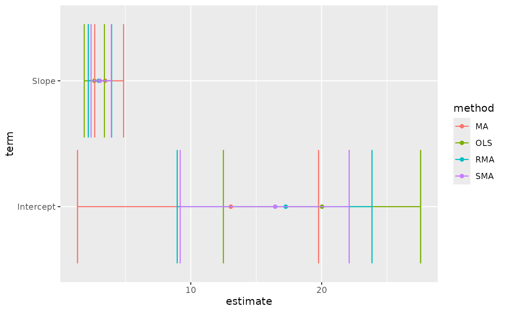

Tidy summarizes information about the components of a model. A model component might be a single term in a regression, a single hypothesis, a cluster, or a class. Exactly what tidy considers to be a model component varies across models but is usually self-evident. If a model has several distinct types of components, you will need to specify which components to return.
# S3 method for lmodel2 tidy(x, ...)
| x | A |
|---|---|
| ... | Additional arguments. Not used. Needed to match generic
signature only. Cautionary note: Misspelled arguments will be
absorbed in |
There are always only two terms in an lmodel2: "Intercept"
and "Slope". These are computed by four methods: OLS
(ordinary least squares), MA (major axis), SMA (standard major
axis), and RMA (ranged major axis).
The returned p-value is one-tailed and calculated via a permutation test.
A permutational test is used because distributional assumptions may not
be valid. More information can be found in
vignette("mod2user", package = "lmodel2").
Other lmodel2 tidiers:
glance.lmodel2()
A tibble::tibble() with columns:
Upper bound on the confidence interval for the estimate.
Lower bound on the confidence interval for the estimate.
The estimated value of the regression term.
The two-sided p-value associated with the observed statistic.
The name of the regression term.
Either OLS/MA/SMA/RMA
library(lmodel2) data(mod2ex2) Ex2.res <- lmodel2(Prey ~ Predators, data = mod2ex2, "relative", "relative", 99) Ex2.res#> #> Model II regression #> #> Call: lmodel2(formula = Prey ~ Predators, data = mod2ex2, range.y = #> "relative", range.x = "relative", nperm = 99) #> #> n = 20 r = 0.8600787 r-square = 0.7397354 #> Parametric P-values: 2-tailed = 1.161748e-06 1-tailed = 5.808741e-07 #> Angle between the two OLS regression lines = 5.106227 degrees #> #> Permutation tests of OLS, MA, RMA slopes: 1-tailed, tail corresponding to sign #> A permutation test of r is equivalent to a permutation test of the OLS slope #> P-perm for SMA = NA because the SMA slope cannot be tested #> #> Regression results #> Method Intercept Slope Angle (degrees) P-perm (1-tailed) #> 1 OLS 20.02675 2.631527 69.19283 0.01 #> 2 MA 13.05968 3.465907 73.90584 0.01 #> 3 SMA 16.45205 3.059635 71.90073 NA #> 4 RMA 17.25651 2.963292 71.35239 0.01 #> #> Confidence intervals #> Method 2.5%-Intercept 97.5%-Intercept 2.5%-Slope 97.5%-Slope #> 1 OLS 12.490993 27.56251 1.858578 3.404476 #> 2 MA 1.347422 19.76310 2.663101 4.868572 #> 3 SMA 9.195287 22.10353 2.382810 3.928708 #> 4 RMA 8.962997 23.84493 2.174260 3.956527 #> #> Eigenvalues: 269.8212 6.418234 #> #> H statistic used for computing C.I. of MA: 0.006120651 #>#> # A tibble: 8 x 6 #> method term estimate conf.low conf.high p.value #> <chr> <chr> <dbl> <dbl> <dbl> <dbl> #> 1 MA Intercept 13.1 1.35 19.8 0.01 #> 2 MA Slope 3.47 2.66 4.87 0.01 #> 3 OLS Intercept 20.0 12.5 27.6 0.01 #> 4 OLS Slope 2.63 1.86 3.40 0.01 #> 5 RMA Intercept 17.3 8.96 23.8 0.01 #> 6 RMA Slope 2.96 2.17 3.96 0.01 #> 7 SMA Intercept 16.5 9.20 22.1 NA #> 8 SMA Slope 3.06 2.38 3.93 NA#> # A tibble: 1 x 5 #> r.squared theta p.value H nobs #> <dbl> <dbl> <dbl> <dbl> <int> #> 1 0.740 5.11 0.00000116 0.00612 20# this allows coefficient plots with ggplot2 library(ggplot2) ggplot(tidy(Ex2.res), aes(estimate, term, color = method)) + geom_point() + geom_errorbarh(aes(xmin = conf.low, xmax = conf.high)) + geom_errorbarh(aes(xmin = conf.low, xmax = conf.high))